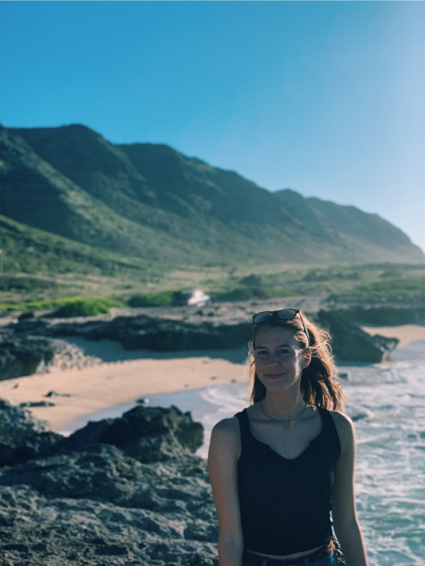

A Website Dedicated to Describing and Displaying my Hobbies
As a Junior in the University of Wisconsin Madison Journalism school, I spend plenty of time dedicated to writing and reporting. I also write for the student run campus newspaper, "The Daily Cardinal." In my free time, to unwind, I go for runs. I've been running competitively for a majority of my life. I also spend a lot of time hanging out with friends. Visit my portfolio here: https://www.kschuwrites.com
